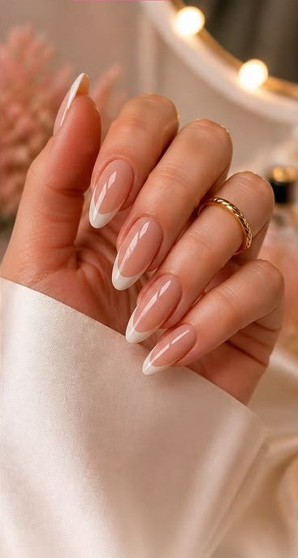
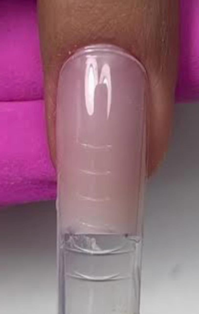
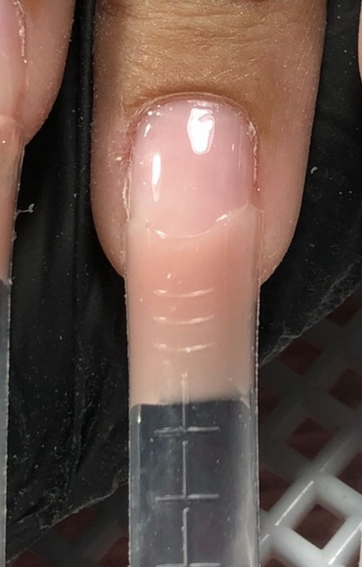

Transformações reais
O resultado fala por si.
Arraste o controle para comparar o antes e o depois de trabalhos reais feitos com a técnica Mold F1.


Especialista em Mold F1
Aprenda técnicas profissionais de alongamento, desenvolva seu próprio método de trabalho e esteja preparada para conquistar suas primeiras clientes.
Minha história
Comecei minha jornada no mundo das unhas aos 21 anos, quando decidi deixar o CLT para seguir minha paixão. Iniciei minha carreira com a técnica de fibra de vidro e, ao longo dos anos, me especializei no Mold F1, uma técnica inovadora que vem conquistando o mercado.
Meu compromisso é elevar a beleza e a autoestima de cada cliente através de um trabalho impecável e personalizado. Mas minha missão vai muito além de embelezar unhas — quero transformar vidas!
Se você sonha em se destacar nessa profissão incrível, eu posso te ajudar. Depois de anos de experiência e aperfeiçoamento, hoje compartilho todo o meu conhecimento em cursos presenciais, ensinando as técnicas mais atualizadas e eficazes para você se tornar uma Nail Designer de sucesso.
Por que escolher a Priscila
Uso de produtos de alta performance e técnicas seguras para unhas saudáveis.
Atendimento personalizado e acompanhamento próximo para alunas e clientes.
Técnicas atualizadas e ensino de qualidade para sua formação completa.
Transformações reais
Arraste o controle para comparar o antes e o depois de trabalhos reais feitos com a técnica Mold F1.

Curso presencial profissional
Este curso foi desenvolvido para qualquer pessoa que deseja se profissionalizar no mercado e se destacar entre a concorrência, seja iniciante ou já experiente na área.
Se você nunca trabalhou com alongamento de unhas e acha que não tem conhecimento suficiente, fique tranquila! Eu vou te guiar passo a passo, com uma didática prática e acessível, garantindo que você aprenda com segurança e confiança. Como o curso é presencial, você conta com acompanhamento direto, tirando dúvidas na hora e recebendo feedbacks personalizados.
Para quem já trabalha na área e quer se aperfeiçoar, dominar novas técnicas e sair do básico, este curso é ideal! Você aprenderá métodos exclusivos, truques e segredos que fazem toda a diferença no resultado final — e que não são ensinados em qualquer lugar.
Quero me inscreverO que você vai aprender

Praticidade + velocidade + acabamento

Resistência + rapidez + acabamento fino
Reconhecimento profissional
Ao concluir o curso, você recebe um certificado de conclusão, comprovando sua capacitação profissional na técnica de Molde F1.
Válido em todo o território nacional — mais um passo rumo à sua independência financeira como Nail Designer.
Fecham em breve — inscreva-se e dê o primeiro passo para se tornar uma Nail Designer de sucesso.
Garantir minha vaga(19) 9 8116-3983